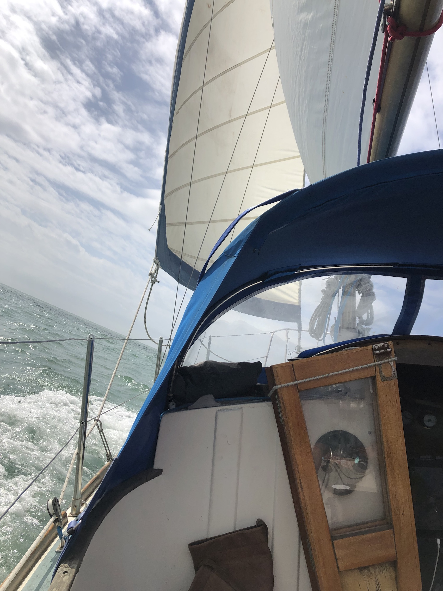
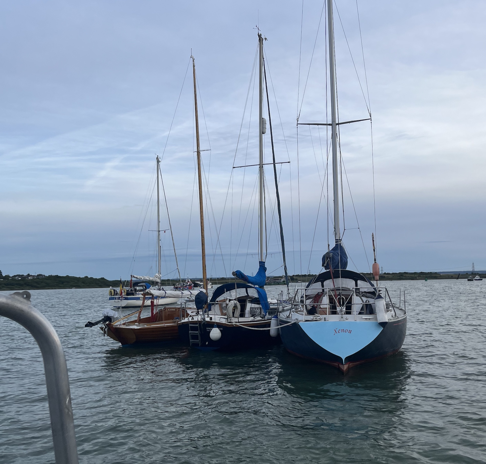
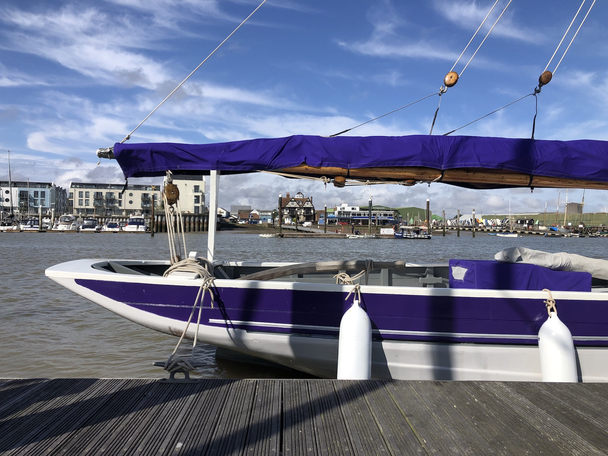
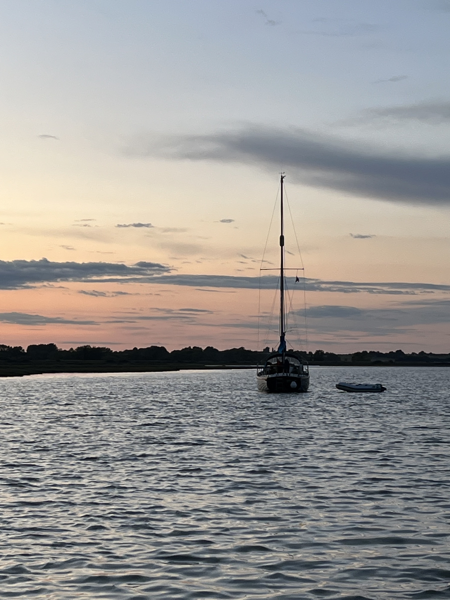
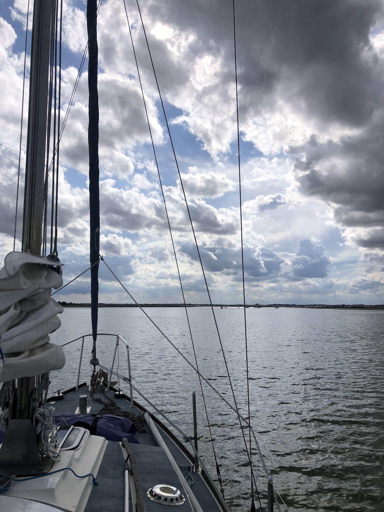
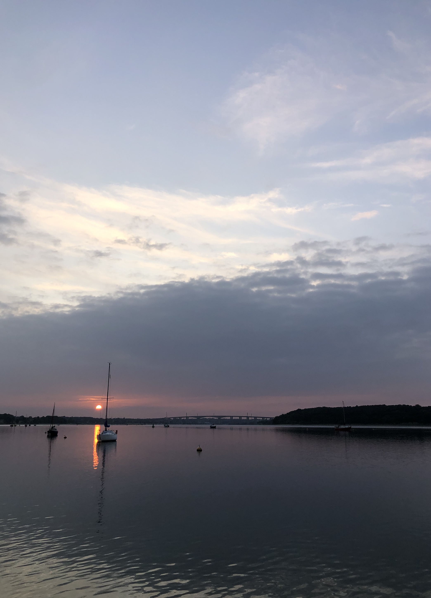
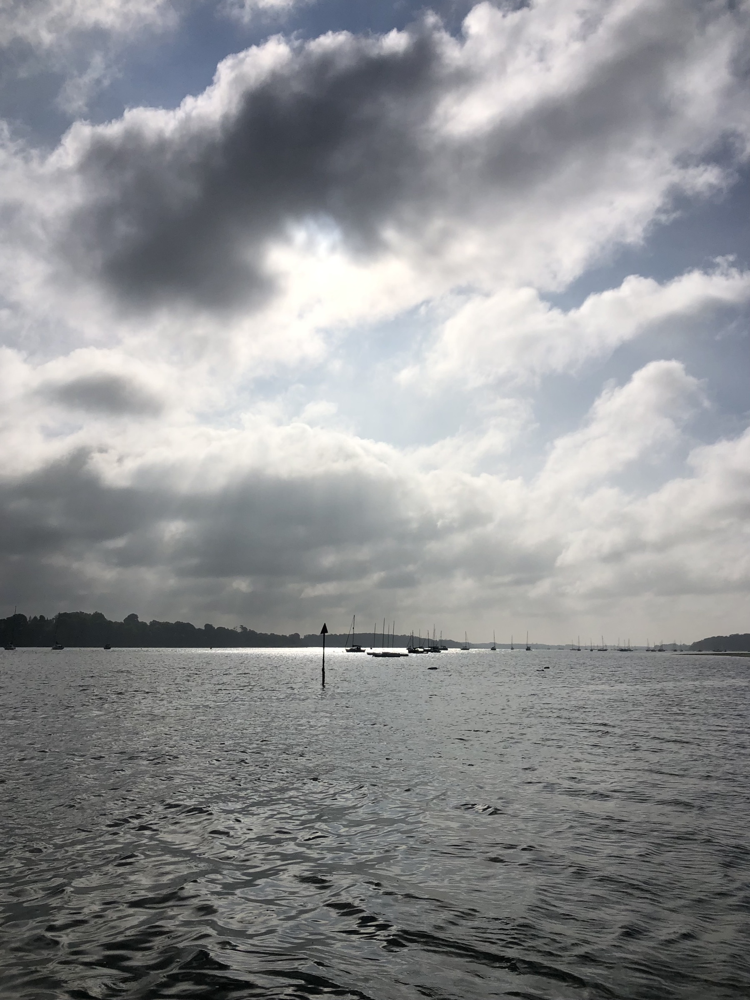
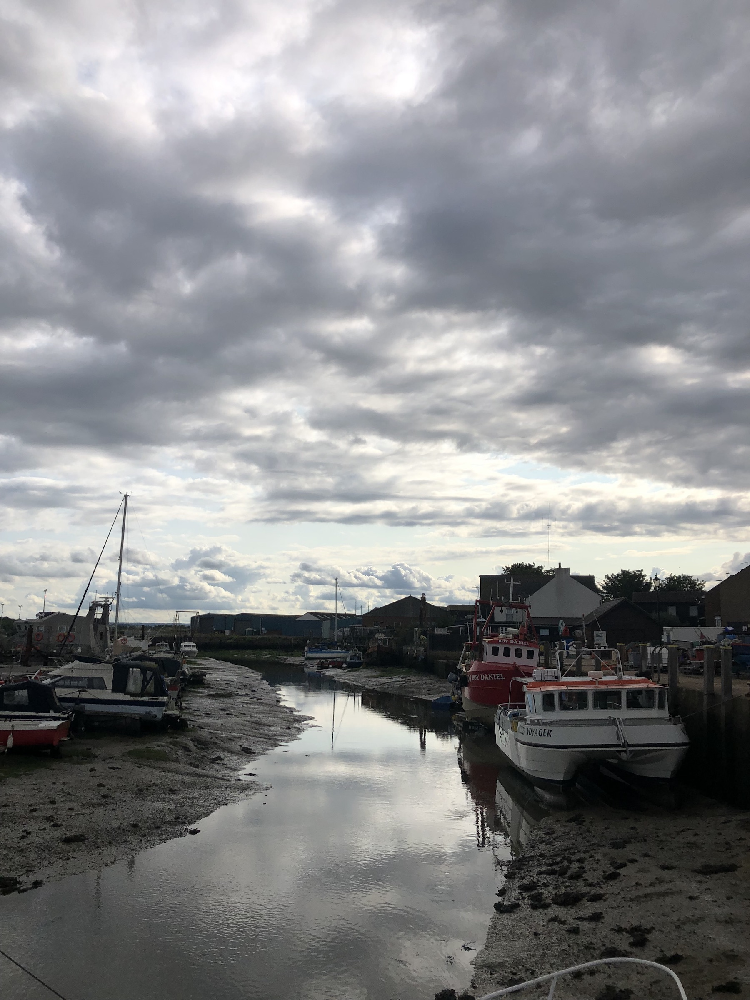
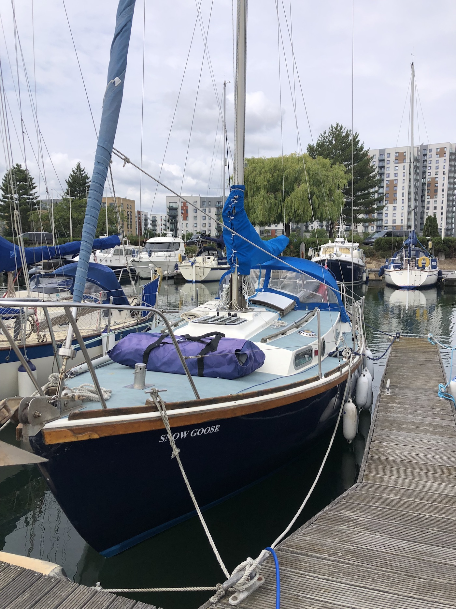

The East Coast Cruise with Greenwich Yacht Club July 2025

This year's Greenwich Yacht Club East Coast Cruise was a bit different. Two different itineraries for a long and a short cruise meant that some boats set off two days before we did and came in a day or two later. We opted for the shorter cruise in the core week which given our own circumstances was all we could do. The two cruises overlapped very sociably at Pin Mill in the middle of the week. A couple of boats didn't join, either through engine and gear failure or through concerns about the weather forecasts, real and rumoured. It was a week of weather, very changeable and sometimes wet or windy but never too much - we have had windier East Coast Cruises in the past. Snow Goose is in good condition this year and performed impeccably throughout. My mission to make sailing her calmer and easier is paying off with a smaller Genoa and quietened engine. Particularly memorable this year were the skies, the clouds, the colours and the sunsets. All showing off the spreading Thames Estuary to its best.
Day 1: Saturday 19.7.25 Gillingham to Queenborough
Wind 5kn Westerly
Not much wind so it was a motor down to Queenborough. But we arrived to a fine evening in Queenborough meeting the fleet of 5 boats and of course a convivial evening.

Day 2: Sunday 20.7.25 Queenborough to Brightlingsea
Wind 5-25kn Southerly
Off to a leisurely start 9.30 and heading out into a murky Medway morning. The wind got up justifying the reefed main and we had an unusual southerly wind allowing a broad and occasionally beam reach all the way up to the Spitway, after which it got more interesting. The new genoa as predicted sets better with the sheet held down a little - (need to set this up more permanently). After passing the Swin the wind appeared to drop so we shook out the reef only to find the wind got stronger rising to 25 knots as we goose winged across the Spitway, which proved a little dicey in the waves. We had a minimum depth 1.4 under the keel, plenty! We were pleased to get back on a broad then a beam reach after the Spitway as the wind increased and we powered along with full main and a part furled genoa. An exciting sail beam reaching, with Snow Goose handling it well and never seeming over pressed. This section of the crossing can drag but not this time, it was the best sailing of the day in the coruscating afternoon sunlight. We arrived in Brightlingsea to calm sunshine and a fine evening.

Day 3: Monday 21.7.25 Brightlingsea to the Walton Backwaters - Kirby Creek
Wind 5-10kn West north westerly
A gentle day starting at 11.30 from the visitors pontoon at Brightlingsea and a motor sail up the wallet to the Walton backwaters. We crossed the Colne Bar half way down with not less that 2.5m depth by the route which goes over very some strange deep holes in the seabed, why are they there? The wallet was pleasant enough and we found more offshore wind close to the shore. The engine running at low revs (1000rpm) gives the boat enough speed to increase apparent wind and fill the sails so this is probably quite fuel efficient. Coming round Naze Head into Harwich Bay it is easy to cut the corner and find too shallow water. So the route into the Walton Backwaters requires going all the way across to the north end of the bay before turning sharp left into the channel. A lovely sunny evening arrival into Hamford Water greeted by seals and on to Kirby Creek to anchor. This is a smaller more protected water and with Orinoco, jeannie ourselves and eventually Xenon it became quite crowded with boats. We pumped up the new dinghy and the outboard performed well going across to Orinoco for a drink in the thunder storms - big skies with squalls coming across with lightning a few miles to our west.

Day 4 Tuesday 22.7.25 Kirby Creek to Halfpenny Pier
What a delightful night in Kirby Creek. Seals, skies and changing landscape as the tide rose and fell. Off this morning for a leisurely sail round into the stour. I'd like to explore more of the Walton Backwaters, quite like the Medway creeks but more unspoilt and probably with more wildlife, certainly more seals. There were several boats tucked into Kirby Creek and surrounding inlets but the whole aspect was of a place far from the madding crowd. Coming into Harwich and passing the mighty Felixtowe docks always plays tricks on my sense of scale with unbelievably large ships and us tiny sailing boats passing close by - as we beat up the river before tacking into the stour we came what seemed very close to the huge side of a docked container ship, but of course we were probably more than a hundred metres away. Tacking into the stour against wind and tide proved slow and progress was indeed tough going, but it was good tacking practice nonetheless. I like the smaller genoa it's easier to tack and manage generally but my project to make Snow Goose easier to manage single handed definitely means new winches. Time to save up! We had a fine spectacle of sunlight and squalls marching down the Stour to meet us, with the banks of trees on either side in contra jour light - all very Constable. What would he have thought of The House for Essex just visible above the trees? So eventually we gave in to the motor and went on up the stour to anchor for lunch by Ewarton ness. Then we sailed goose wing back down to Halfpenny Pier for the night. What a contrast to our mooring spot the night before - this is urban! The now apparently shut hotel towers above the quay and there is a roar and throb from the surrounding town and docks and of course the smell diesel and fish frying somewhere. Happy to be here though.

Day 5 Wednesday 23.7.25 Halfpenny Pier to Royal Harwich Yacht Club, Orwell
Early rise at 6.30 to release a large Dutch boat from our three boat raft on the pier. We put the boat on the outside of the pontoon for the rest of the morning stay which proved considerably more bumpy from passing ships' wash. We set off at 10.00 to sail up the Orwell to our next stop. This was a l lovely beat up the river against a north wind tacking through the moored boats making good progress until of course the tide got the better of us at Pin Mill and we gave in to motoring the last half mile. A really good sail but I want better winches!


Day 6 Thursday 23.7.25 'Rest day' Sailing on the Orwell'
Wind 15-20kn Northwesterly
A brisk sail up the Orwell to introduce our new crew member Darren to sailing and practice tacking. We had mainsail and genoa reefed but were still a bit over canvassed creating weather helm in the gusts. Nonetheless it was a lovely sail tacking and threading through the moored boats up to the bridge which in this light looks like an old Chinese print in the pearly grey rain. No time to sit and stare today though with quite a bit of river traffic and the wind eddying round the bridge piers. We went through to the pool at Fox Marina and then set off back south. We goose winged down to the Wolverstone fuel barge and filled up - we had used a maximum of 17 litres in 4 days, not bad going. Coming back into RHYC we dropped a fender and did a neat MOB manoeuvre, albeit catching a marker beacon as we went round - ouch! - RHYC who's marker it was were most understanding. The rain kept us indoors in the afternoon.
Day 7 Friday 25.7.25 Royal Harwich Yacht Club to Bradwell
Wind 5-8kn Northerly, then South Easterly, then Southerly!
0600 start! A lovely pearly early morning light going down the Orwell to Harwich. We timed it well to pick up the rising tide in the middle of Pennyhole Bay and then had it with us all the way to the Blackwater. One porpoise fin appeared beside the boat before it retired to the murky 'depths'. We started motoring, then motor sailing then sailing as the day went on. Light winds meant careful sail trimming but we kept ahead of Eos - which is what matters. Entering the Blackwater we had enough wind to enjoy a sail round the Radio Caroline ship and then stop for lunch at anchor before going into Bradwell. The marina is welcoming in a relaxed nonchalant way. A hot walk to Bradwell village for basics and then a calm evening with the Eos crew on the marina clubhouse deck with fine views across the Blackwater towards Tollesbury. Much discussion about what time to leave and get out before the tide becomes too low has us going for a 0530 start in the morning.

Day 8 Saturday 26.7.25 Bradwell to Queenborough
Wind 5-12kn Southwesterly
What a crossing. Another early one, up at 0500 and off at 0525 two and a half hours before low water springs to squeeze over the sandbanks at the entrance to Bradwell creek. We crept along hoping to be in the deepest part of the channel, lowest depth 0.3m below the keel - thats shallow. But we made it and were soon out in the Blackwater motoring then sailing to the Spitway. - that rite of passage of passing the two sentinel safe water marks with diminishing depths until suddenly one is through to the other side. A sigh of relief and the beginning of the long and fairly straight route back to the Medway. We tacked through the Swin and pinched along the edge of a sand bank with just enough depth rather than tack again. Its this kind of judgement call which makes tidal estuary sailing more demanding and more rewarding than sailing in open water. Using the mast head wind indicator and judging our course to keep just enough wind in the sails. Snow goose is never going to sail very close to the wind but if we let her off the wind a little she sails well enough. Flat water, big sky, gathering wind, tacking, tacking and then in dying wind a motor in past the brooding presence of the Montgomery wreck. Big ships and small boats. Queenborough at last, resting followed by an evening with friends.


Day 9 Sunday 27.7.25 Queenborough to Gillingham
Wind 5-10kn Northwesterly
After a slightly bumpy night caused by wind, tide and mooring buoy rubbing on the side of the boat we set off home. Although the wind was light it was just northerly enough to sail almost all the way. An enjoyable close hauled beat in the morning sunlight up the Medway pointing out the historic wreck sites and learning more as we went. A lovely end to the week.
